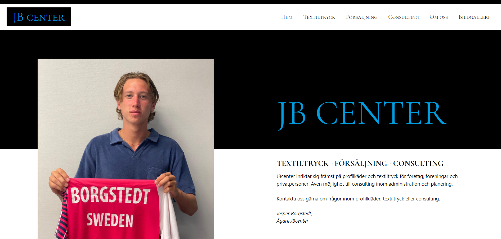

This project is a game created by me and Saga Lannerhjelm in the course "Foundations of Programming" at Jönköping University. The game is coded in javascript, using the framework P5.js. Unfortunately, the game is meant for desktop only.
To the GameThis is a website that I designed and coded for the company JB Center. The website is made up by HTML, CSS and Javascript and is static with the intention to be informative only. This is my first real commissioned website project and it was really fun to work on:)
 Visit WebsitePetson's Rescue is a school project in our first coding class "Web and User Interface Design". On this project I worked with my friends Hannah Levander and Caroline Frössling and it's coded in HTML and CSS only.
See ProjectThis assigment was the final submission in the course "Web Development Fundamentals" which I struggled with a bit. Although after finishing my studies, I have a better understanding on how it could be improved. The website was up and running on Amazon Lightsail for the submission, but is now taken down. To see the project files, please go to my github page!
To Github Page